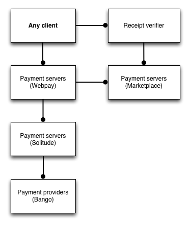
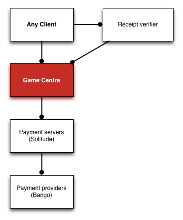

layout: true class: center, middle, inverse --- class: front # Payments Architecture ## Q3, 2014 --- # Current plans Make payments more attractive to developers. Payments that work **everywhere** on **everything**. --- # Bango Identity Allows **Android** payments and **Desktop** payments Identity tied to the user not to device. Currently in QA, working with Bango on completing. --- # Credit cards everywhere Allow credit cards in every country. Use carrier billing as an improvement where possible. Current blocker: Bango and translations. --- # Polyfill Currently payments only work on **clients with mozPay**. A mozPay polyfill will allow payments to work on **everything**. --- # Serverless in-app payments Requires no server to store receipts. Easier for developers. Currently queued up behind a few other projects in QA. --- # Which means... All payments will now use an "fxpay" library. This gives us more control, more flexibility and won't be bound to trains. --- # Architecture - **Marketplace** (developer signup, product fulfillment) - **Webpay** (payment processing) - **Solitude** (storage, provider integration) - **Payment provider** (actual payment) --- # Current - Architecture  --- # Beyond Marketplace How much do you want to control? Example: if you wanted custom **developer signup**, **product fulfillment** and **payment processing** then... --- # Example: Game Centre  --- ## Fin